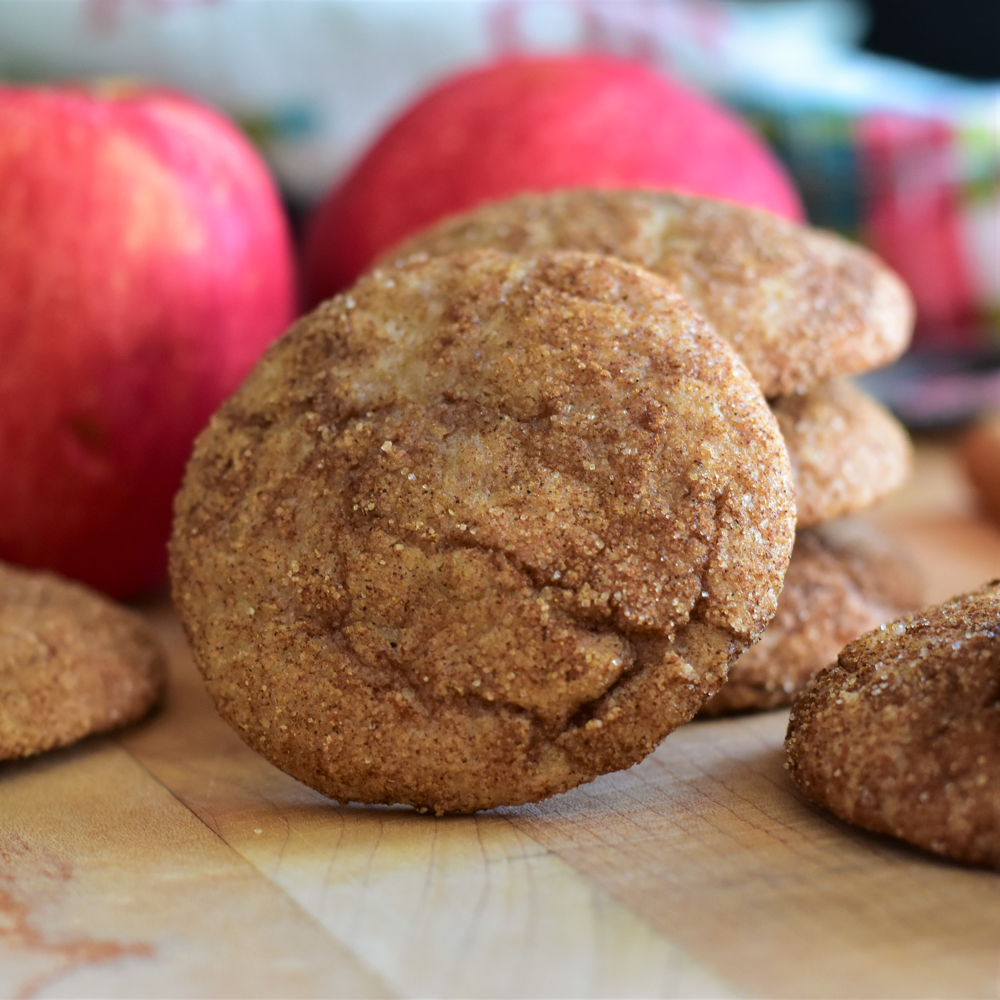

Snickerdoodle Cookies

Here is a recipe for Apple Butter Snickerdoodle Cookies
Ingredients
- 2.5 cups all-purpose flour
- 0.5 tsp cream of tartar
- 0.5 tsp baking soda
- 0.5 tsp salt
- 0.25 tsp ground cinnamon
- 0.25 tsp ground nutmeg
- 1.75 cups white sugar
- 0.5 cup unsalted butter
- 1 large egg
- 0.5 tsp vanilla extract
- 0.75 cup apple butter
- 2 tbsp ground cinnamon
Steps
- Whisk together flour, cream of tartar, baking soda, salt, 1/4 teaspoon cinnamon, and nutmeg in a medium bowl until combined.
- Mix together butter and 1 1/2 cups sugar in a large bowl until thoroughly combined. Stir in egg and vanilla until incorporated. Add apple butter and mix until combined. Pour in 1/2 of the dry ingredients and mix until just combined. Add remaining dry ingredients and mix just until no dry clumps of flour remain. Cover bowl and refrigerate for at least 2 hours, or up to 24 hours.
- Preheat the oven to 375 degrees F (190 degrees C). Line 2 baking sheets with parchment paper.
- Mix together remaining 1/4 cup sugar and 2 tablespoons cinnamon in a shallow bowl or pie pan. Drop tablespoon-sized pieces of dough into the cinnamon-sugar mixture and roll into balls, coating well. Place 1 inch apart on the prepared baking sheets.
- Bake in the preheated oven until edges are just set, about 10 minutes. Allow cookies to cool on baking sheets for 5 minutes before removing to a wire rack to cool completely.